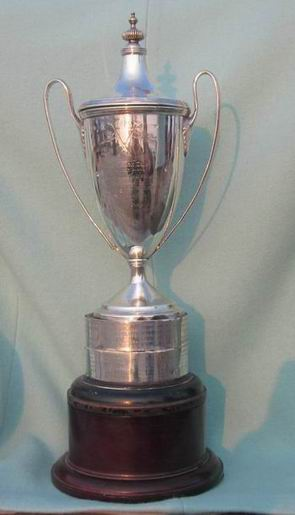
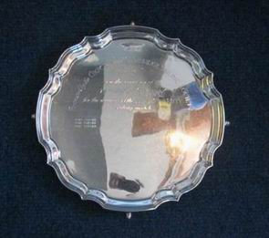

Yule Oldham Open (Varsity) Trophy
Early Oxford Cambridge Sailing Varsity Match History
This page presents a complete set of Oxford Cambridge sailing Varsity Match history results. Cambridge rejected an 1898 challenge by Oxford because: “the Club (CUCrC) has no suitable boats to sail in such a match and, from its lists, it seems that the OUYC is not entirely a University Club”. The first Oxford Cambridge sailing Varsity Match took place in 1912, after Cambridge sentiment changed in 1910. It took the form of three match races – with a different helm in each of the three races and one of the other two helms crewing. True team racing took place the following year (1913) and thereafter. For convenience, this ‘main’ sequence of Oxford Cambridge sailing Varsity Match history includes the first (1912) result.
Later Oxford Cambridge Sailing Varsity Match History
The First World War interrupted the series from 1915 to 1919, and the 1940 Match planned for Oulton Broad was cancelled due to the Second World War. A clip of the 1928 Match at Weymouth is the first item on the Video History page of this website. The Yule Oldham[ext-link] (Wiki link) Cup for the Open Varsity Match dates from 1928, because the previous (Spender) cup had been lost. Often dinghies and sometimes two boats a side were used in the early matches, until the mid-1930’s. Since that time, apart from World War II, the match has been three boats a side at a coastal location. The match has been in keel boats consistently since the 1950’s, and nine-man teams started in 1978.
Blues Status
Half Blues were first awarded to the teams in 1937 (Cambridge) and 1949 (Oxford). Half Blue sweaters did not make their appearance until 1947. Full Blues were awarded, subject to good BUSA performance, from 1967 (Oxford – 2), 1974 (Oxford – up to 6), 1977 (Cambridge – 2), 1978 (Cambridge – 3), and 1982 (Cambridge – up to 6). Half Blues were first awarded for the Womens Match in 1958, with Full Blues awarded from 1961 until 1979. From 1980 Half Blues were awarded to women who sailed in the Open Match or Womens Match, with Full Blues for good BUSA performance. The current Cambridge criteria are published on the CUCrC website[ext-link]. Oxford criteria are not available online.
Open Team History
The first open or mixed Varsity Match team was in 1984, when Julian Ellwood (Trinity) invited Jenny Pocock (Emmanuel) to crew - Cambridge won. The same thing happened in 1990 when Ian Walker (Downing) invited Liz Walker (New Hall/Murray Edwards – no relation!) to crew - Oxford won. However, the first mutually agreed ‘teams open to both sexes’ match, which Cambridge won, was not sailed until 2000. In that year Erin Delaney (Wolfson) and Becca O’Brien (Queens) crewed for Cambridge, and Nicole Johnson (St Edmund Hall) captained and helmed for Oxford (the first woman to do so). The following year (2001) Ari Liddell (New Hall/Murray Edwards, Cambridge Women's Captain in 1999/2000) became the first Cambridge woman helm - Cambridge won again. Eddie Glennie (Caius) was the first woman Cambridge (Open) Team Captain in 2008/09 - Oxford won.

O&CSS 75th Anniversary Ladies (Varsity) Plate
History of Womens Sailing Varsity Match
The Womens Match has been sailed as three-keel-boats-a-side since 2017 (with the option to default to two-a-side in a ‘lean’ year), and as two-keel-boats-a-side from 1995 to 2016. In previous Varsity Match history it had been sailed three-dinghies-a-side, but only took place at the same venue as the main match from 1993 onwards. Before 1993 the match alternated between Oxford and Cambridge locations, the last ‘separate’ match being sailed at Farmoor in 1992. The date of the first Womens Match, which Cambridge won, appears to have been 1958, and it was sailed at Oxford in flood conditions.
First Womens Sailing Varsity Match
Captain Hilary Fischer-Webb (now Weeks) reports:
Somehow I and my crew (Norma Bassett) managed to sail, unknowingly, into a neighbouring flooded field. This was brought to our notice when we hit the hedge trying to beat back across the river! Eventually we realised what had happened and had another go with a raised centreboard. This was successful, but we had been swept downstream and were perilously close to the roaring weir … Never have I been in so much fear of losing my ‘vessel’ and our presumably brilliant short tacking back to the mark beside the submerged hedge I cannot remember at all! Nor do I remember who won (Cambridge did – Ed). However the maiden Womens Team were thrilled to be awarded Half Blues – a much nicer and more valued scarf than my Hockey Blue.
The current trophy for the Womens Varsity Match, the O&CSS 75th Anniversary Ladies Plate, was presented by the Oxford & Cambridge Sailing Society on the occasion of the Society’s 75th Anniversary in 2009 – previously there had been only a very small EPNS trophy.
Cambridge Team Lists
An historic list of Cambridge teams is maintained on the CUCrC website: Open Varsity Teams[ext-link] and Womens Varsity Teams[ext-link]. There is currently no online list of Oxford teams.
Analysis of Results to Date
In Varsity Match history so far Cambridge has won 61 matches; Oxford 40; and 4 matches have been tied. Early ties resulted from the pre-1961 tradition of adding points up across races rather than scoring races won. High-points scoring was used until the 1970's, with a ¼ point bonus for 1st place - hence the appearance of fractional scores in the results below. (The famous 1970 tie in Dun Laoghaire happened because boisterous conditions prevailed for the sixth race, with Oxford leading 3-2 overall. Oxford initiated some aggressive and rather un-seamanlike sailing at the 5-minute gun, only three boats finished the race, and Cambridge won on protests. In consultation with nervous Glen OD owners, the Royal St George YC Vice Commodore decided that the 7th race would not be sailed, so the match ended in a 3-all tie.) The numbering of the Women's Match (in the ‘Place’ column) assumes that the match has taken place every year since the first match in 1958 – there are significant gaps in the records. All the years listed below are calendar years.
Result Details
(As well as detailing historic results, the table below shows the place, date, and boats proposed for the next few matches – with the organising University also indicated under Year)
| Year | Open Winner | Score | Women's Winner | Score | Place (From 1958 to 1992 the Women's match alternated between Oxford and Cambridge locations) |
|---|---|---|---|---|---|
| 2023 (C) | - | - | - | - | Island SC in Sonars |
| 2022 | Cambridge | 4-3 | Oxford | 4-1 | Royal Harwich YC |
| 2021 | Cambridge | 4-3 | Oxford | 4-2 | Oxford SC in Fireflies due to COVID (Open 1st & 2nd strings were separate six-person teams) |
| 2020 | Cambridge | 8-3 | Oxford | 4-1 | Oxford SC in Fireflies due to COVID (Open 1st & 2nd strings were separate six-person teams) |
| 2019 | Cambridge | 4-0 | Cambridge | 4-0 | Aldeburgh YC |
| 2018 | Cambridge | 4-0 | Cambridge | 4-1 | Weymouth & Portland Sailing Academy |
| 2017 (100th Match) | Cambridge | 4-0 | Cambridge | 4-1 | Itchenor SC (60th Womens Match) |
| 2016 | Cambridge | 4-0 | Cambridge | 4-3 | Royal Southern YC |
| 2015 | Cambridge | 4-0 | Oxford | 4-3 | Strangford Lough YC, N Ireland |
| 2014 | Cambridge | 4-1 | Cambridge | 4-0 | Royal Yacht Squadron, Cowes |
| 2013 | Cambridge | 4-1½ | Oxford | 4-3 | Aldeburgh YC |
| 2012 | Oxford | 4-1 | Oxford | 4-1 | Itchenor SC |
| 2011 | Oxford | 2-1 | Oxford | 2-1 | Hayling Island SC |
| 2010 | Cambridge | 4-2 | Oxford | 4-0 | Royal Lymington YC |
| 2009 | Oxford | 4-2 | Oxford | 4-0 | Itchenor |
| 2008 | Oxford | 3-1 | Cambridge | 1-0 | Cowes |
| 2007 | Cambridge | 4-1 | Oxford | 4-0 | Cowes (50th Womens Match) |
| 2006 | Cambridge | 4-2 | Oxford | 4-0 | West Kirby |
| 2005 | Cambridge | 4-2 | Oxford | - | Cowes |
| 2004 | Cambridge | 4-1 | - | - | Hamble |
| 2003 | Oxford | 4-3 | - | - | Cowes |
| 2002 | Cambridge | 4-2 | - | - | Hamble |
| 2001 | Cambridge | 4-1 | - | - | Aldeburgh |
| 2000 | Cambridge | 4-1 | - | - | Salcombe (Agreed open teams start) |
| 1999 | Cambridge | 4-3 | - | - | Aldeburgh |
| 1998 | Cambridge | 4-0 | Oxford | - | Poole |
| 1997 | Cambridge | 4-0 | Cambridge | - | Itchenor |
| 1996 | Oxford | 4-1 | Cambridge | 4-1 | St Mawes |
| 1995 | Cambridge | 4-2 | Cambridge | 4-2 | Woolverstone - Womens keel boat matches start |
| 1994 | Cambridge | 4-3 | Cambridge | - | Yarmouth |
| 1993 | Oxford | 4-2 | Cambridge | - | Itchenor (Womens join men - in dinghies) |
| 1992 (75th Match) | Cambridge | 4-3 | Cambridge | - | Woolverstone |
| 1991 | Cambridge | 4-2 | Cambridge | 3-0 | Itchenor |
| 1990 | Oxford | 4-1 | Cambridge | - | Cowes (Cambridge men had 1 woman crew) |
| 1989 | Oxford | 4-2 | - | - | Bembridge |
| 1988 | Cambridge | 4-1 | - | - | Cowes |
| 1987 | Cambridge | 4-2 | Cambridge | - | Cowes |
| 1986 | Cambridge | 4-1 | Cambridge | 4-0 | Aldeburgh |
| 1985 | Cambridge | 4-0 | Cambridge | - | Oulton Broad |
| 1984 | Cambridge | 4-1 | Cambridge | - | Aldeburgh (Cambridge men had 1 woman crew) |
| 1983 | Oxford | 4-1 | Oxford | - | Cowes |
| 1982 | Oxford | 4-2 | Oxford | 4-1 | Abersoch (25th Womens Match) |
| 1981 | Cambridge | 4-1 | Oxford | 4-0 | Strangford Lough YC, N Ireland |
| 1980 | Cambridge | 4-2 | Cambridge | 4-0 | West Kirby |
| 1979 | Cambridge | 4-0 | Oxford | 4-1 | Beaumaris |
| 1978 | Cambridge | 4-2 | Oxford | 4-2 | Bridlington (Nine man teams start) |
| 1977 | Cambridge | 4-2 | Tie | 1-1 | Portsmouth |
| 1976 | Oxford | 4-3 | Cambridge | 1-0 | Lymington |
| 1975 | Oxford | 4-3 | Cambridge | 3-1 | Beaumaris |
| 1974 | Oxford | 4-3 | Oxford | - | Hayling Island |
| 1973 | Oxford | 4-3 | Cambridge | 2-0 | Burnham-on-Crouch |
| 1972 | Oxford | 4-1 | - | - | Bembridge |
| 1971 | Cambridge | 4-3 | Oxford | - | Lowestoft |
| 1970 | Tie | 3-3 | - | - | Dun Laoghaire |
| 1969 | Cambridge | 4-3 | - | - | Southsea |
| 1968 | Oxford | 4-3 | - | - | Parkstone |
| 1967 (50th Match) | Oxford | 4-2 | - | - | Dun Laoghaire |
| 1966 | Oxford | 4-1 | Oxford | - | Seaview |
| 1965 | Oxford | 4-1 | Cambridge | - | Beaumaris |
| 1964 | Oxford | 4-1 | Cambridge | 93¾-93½ | Upnor |
| 1963 | Cambridge | 4-1 | - | - | Parkstone |
| 1962 | Cambridge | 4-2 | Cambridge | - | Seaview |
| 1961 | Cambridge | 4-2 | Cambridge | - | Rhu, Gareloch |
| 1960 | Cambridge | 118-106½ | Cambridge | - | Bembridge |
| 1959 | Oxford | 122-108½ | Cambridge | - | Burnham-on-Crouch |
| 1958 | Cambridge | 105¼-89 | Cambridge | - | Cowes (1st Womens Match - at Oxford) |
| 1957 | Oxford | 124¼-104¼ | - | - | Lowestoft |
| 1956 | Cambridge | 121-113½ | - | - | Bembridge |
| 1955 | Cambridge | 122-113½ | - | - | Falmouth |
| 1954 | Oxford | 120-115½ | - | - | Dun Laoghaire |
| 1953 | Oxford | 64-61½ | - | - | Warsash |
| 1952 | Cambridge | 65-57½ | - | - | Burnham-on-Crouch |
| 1951 | Oxford | 63½-62½ | - | - | Seaview |
| 1950 | Cambridge | 63-55½ | - | - | Poole |
| 1949 | Oxford | 69-57½ | - | - | Woolverstone |
| 1948 | Cambridge | 64-57½ | - | - | Lowestoft (Nine-man teams) |
| 1947 | Oxford | 43½-40½ | - | - | Poole |
| 1946 | Oxford | 43¼-40¾ | - | - | West Mersea |
| 1945 | Tie | 21½-21½ | - | - | Ranelagh (Putney) |
| 1944 | Oxford | 23½-19 | - | - | Ranelagh (Putney) |
| 1943 | Oxford | 22¼-20¼ | - | - | Ranelagh (Putney) |
| 1942 (25th Match) | Cambridge | 12½-8 | - | - | Ranelagh (Putney, two-boat teams) |
| 1941 | Oxford | 19½-9¼ | - | - | Shiplake (Henley) |
| 1940 | No match | - | - | - | World War II |
| 1939 | Cambridge | 36-23½ | - | - | Falmouth |
| 1938 | Cambridge | 43½-40½ | - | - | West Mersea |
| 1937 | Oxford | 45¾-35¼ | - | - | Bembridge |
| 1936 | Oxford | 42-39 | - | - | Southsea |
| 1935 | Cambridge | 43-42 | - | - | Hythe |
| 1934 | Tie | 41-41 | - | - | Cowes |
| 1933 | Cambridge | 43-40 | - | - | Lowestoft |
| 1932 | Cambridge | 32-26 | - | - | Burnham-on-Crouch |
| 1931 | Cambridge | 30-28 | - | - | Ryde |
| 1930 | Cambridge | 45-38 | - | - | Oulton Broad & Lowestoft (Three boat teams from here on) |
| 1929 | Cambridge | 18-15 | - | - | Lymington |
| 1928 | Cambridge | 38½-25½ | - | - | Weymouth |
| 1927 | Tie | 38-38 | - | - | Oulton Broad & Aldeburgh |
| 1926 | Oxford | 37-29 | - | - | Oulton Broad & Lowestoft |
| 1925 | Cambridge | 36-19 | - | - | Oulton Broad & Lowestoft |
| 1924 | Cambridge | 27-34 | - | - | Burnham-on-Crouch |
| 1923 | Oxford | 32-31 | - | - | Burnham-on-Crouch |
| 1922 | Oxford | 12-9 | - | - | Hythe |
| 1921 | Oxford | 12-9 | - | - | Hythe |
| 1920 | Oxford | 15-12 | - | - | Oulton Broad |
| 1919 | No match | - | - | - | World War I aftermath |
| 1918 | No match | - | - | - | World War I |
| 1917 | No match | - | - | - | World War I |
| 1916 | No match | - | - | - | World War I |
| 1915 | No match | - | - | - | World War I |
| 1914 | Cambridge | 2-1 | - | - | Ely (Two or three boat teams from here on) |
| 1913 | Oxford | 2-1 | - | - | Oxford (Two boat team racing) |
| 1912 | Cambridge | 2-1 | - | - | Ely (Three match races) |